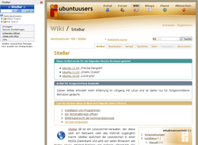
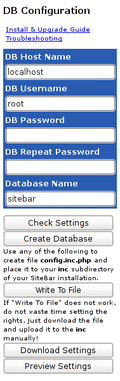
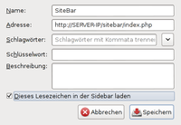

SiteBar
Archivierte Anleitung
Dieser Artikel wurde archiviert, da er - oder Teile daraus - nur noch unter einer älteren Ubuntu-Version nutzbar ist. Diese Anleitung wird vom Wiki-Team weder auf Richtigkeit überprüft noch anderweitig gepflegt. Zusätzlich wurde der Artikel für weitere Änderungen gesperrt.
Artikel für fortgeschrittene Anwender
Dieser Artikel erfordert mehr Erfahrung im Umgang mit Linux und ist daher nur für fortgeschrittene Benutzer gedacht.
Zum Verständnis dieses Artikels sind folgende Seiten hilfreich:
 SiteBar
SiteBar  ist ein Lesezeichen-Verwalter, der diese über ein Netzwerk oder das Internet zugänglich macht. SiteBar speichert die Lesezeichen in einer MySQL-Datenbank und wird von vielen Browsern wie Firefox, Opera und Internet Explorer unterstützt. Bei auf Webkit basierenden Browsern wie Chromium oder Midori gibt es Probleme bei der Darstellung als Seitenleiste (Sidebar).
ist ein Lesezeichen-Verwalter, der diese über ein Netzwerk oder das Internet zugänglich macht. SiteBar speichert die Lesezeichen in einer MySQL-Datenbank und wird von vielen Browsern wie Firefox, Opera und Internet Explorer unterstützt. Bei auf Webkit basierenden Browsern wie Chromium oder Midori gibt es Probleme bei der Darstellung als Seitenleiste (Sidebar).
Das Programm ist eine freie Alternative zu Xmarks. Die Lesezeichen können auch mit weiteren Benutzern geteilt werden. Neben der nachfolgend beschriebenen Installation auf einem eigenen Server ist auch ein Online-Zugriff auf einen von SiteBar selbst betriebenen oder einen anderen öffentlichen SiteBar-Server möglich. In der Regel ist dazu eine kostenlose Registrierung erforderlich.
|  |
| Sitebar in Firefox (Bookmarklet) |
Voraussetzungen¶
Die Webanwendung setzt einen Webserver mit PHP und MySQL als Datenbank voraus. Im Artikel LAMP finden sich weitere Informationen zur Installation und Konfiguration dieser Anwendungen, die vor der Installation von SiteBar erfolgen muss.
Installation¶
SiteBar befindet sich bis einschließlich Ubuntu 11.10 in den offiziellen Paketquellen. Es muss lediglich das folgende Paket auf dem Server installiert [1] werden:
sitebar (universe)
 mit apturl
mit apturl
Paketliste zum Kopieren:
sudo apt-get install sitebar
sudo aptitude install sitebar
Nach der Installation beginnt die Konfiguration, die aus einer Serie von Fragen besteht. Sobald alle Fragen beantwortet sind, kann auf das Programm mit einem Webbrowser als Client über die Adresse http://SERVER-IP_ODER_NAME/sitebar/ zugegriffen werden.
Manuell¶
Achtung!
Um Sicherheitsrisiken zu vermeiden, sollten manuell installierte Anwendungen regelmäßig auf den aktuellen Stand gebracht werden.
Herunterladen und entpacken¶
Die Archivdatei SiteBar-3.3.9.tar.bz2 von der Homepage  herunterladen und entpacken [2]. Die entpackten Dateien müssen nun mit Root-Rechten in das Verzeichnis /var/www/sitebar/ auf dem Server kopiert werden.
herunterladen und entpacken [2]. Die entpackten Dateien müssen nun mit Root-Rechten in das Verzeichnis /var/www/sitebar/ auf dem Server kopiert werden.

Erstellen der Datenbank¶
Im nächsten Schritt muss SiteBar für die Nutzung mit MySQL konfiguriert werden. Dazu besucht man die Seite http://SERVER-IP_ODER_NAME/sitebar/. Die nun erscheinenden Formularfelder füllt man entsprechend aus, überprüft die Eingaben und erstellt eine Datenbank. Die Konfiguration für SiteBar lädt man als config.inc.php herunter und kopiert diese Datei mit Root-Rechten nach /var/www/sitebar/inc/ auf dem Server. Der Inhalt ist kein Geheimnis:
1 2 3 4 5 6 7 8 9 10 11 12 | <?php $SITEBAR = array ( 'db' => array ( 'host' => 'localhost', 'username' => 'root', 'password' => 'geheim', 'name' => 'sitebar', ), ); ?> |
Nun befolgt man noch folgende Schritte:
Administrator-Konto anlegen
ein paar Einstellungsfragen beantworten
Benutzer anlegen
Nutzung¶
Vom eigenem Rechner kann SiteBar nun mit einem Webbrowser über die Adresse http://SERVER-IP_ODER_NAME/sitebar/ zugegriffen werden. Nach der Benutzer-Anmeldung können die eigentlichen Funktionen der Webanwendung genutzt werden, die teilweise hinter der rechten Maustaste  versteckt sind.
versteckt sind.
Firefox-Erweiterung¶
|  |
| Bookmarklet erstellen |
Auf der Projektseite wird eine Erweiterung für Firefox angeboten, die SiteBar in den Browser integriert. Nach der Installation gibt man die URL von SiteBar unter "Extras -> Add-ons -> Erweiterungen -> Sitebar Client" an. Über "Ansicht -> Sidebar -> Sitebar Client" lässt sich die Erweiterung ein- bzw. ausblenden.
Falls diese nicht mit neueren Firefox-Versionen kompatibel ist (getestet bis Firefox 19), empfiehlt sich der Einsatz eines Bookmarklets (Lesezeichen), das die gleiche Funktionalität wie die Erweiterung besitzt und keine Installation erfordert. Das Bookmarklet kann via "Integrator öffnen" im Menü von SiteBar erzeugt werden. Da dieses Menü erst nach einer Anmeldung zugänglich ist, kann man ein Lesezeichen auch manuell erstellen (siehe Abbildung). Die URL ändert sich nicht, man muss nur die Option "Diese Lesezeichen in der Sidebar laden" aktivieren.
Experten-Info:
Der Programmname "Sitebar" und die Sidebar in Firefox sind zwei unterschiedliche Dinge.
Problembehebung¶
Suchfunktion¶
Bei der Version 3.3.9 gibt es u.a. noch Probleme mit der internen Suchfunktion. Diese sind in der Entwicklerversion 3.4 behoben, die aber mind. PHP 5.2 oder neuer benötigt (der Vorgänger funktioniert auch mit PHP 4.x).
Links¶
ehemalige Projektseite
auf SourceForgeSemanticScuttle
- "sozialer" Lesezeichenmanager, ab Ubuntu 12.04 in den offiziellen Paketquellen enthalten (semanticscuttle)Shaarli
- minimalistischer, datenbankfreier Lesezeichenmanager; Projektseite von sebsauvage, Initiator und EntwicklerServerdienste
 Übersichtsseite
Übersichtsseite

- Erstellt mit Inyoka
-
 2004 – 2017 ubuntuusers.de • Einige Rechte vorbehalten
2004 – 2017 ubuntuusers.de • Einige Rechte vorbehalten
Lizenz • Kontakt • Datenschutz • Impressum • Serverstatus -
Serverhousing gespendet von